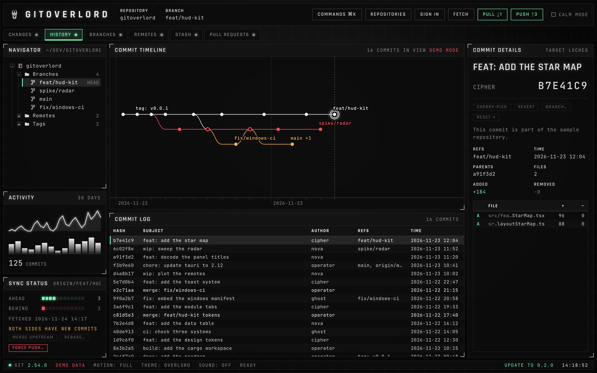
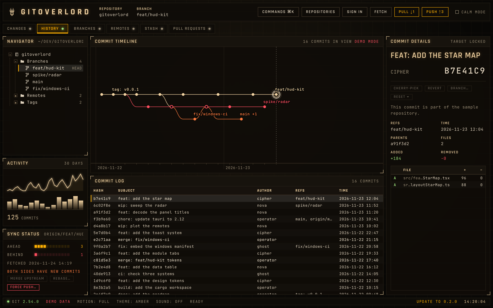
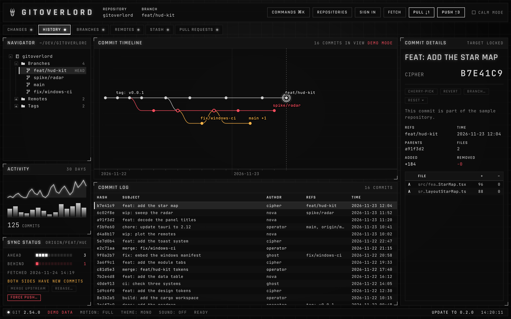
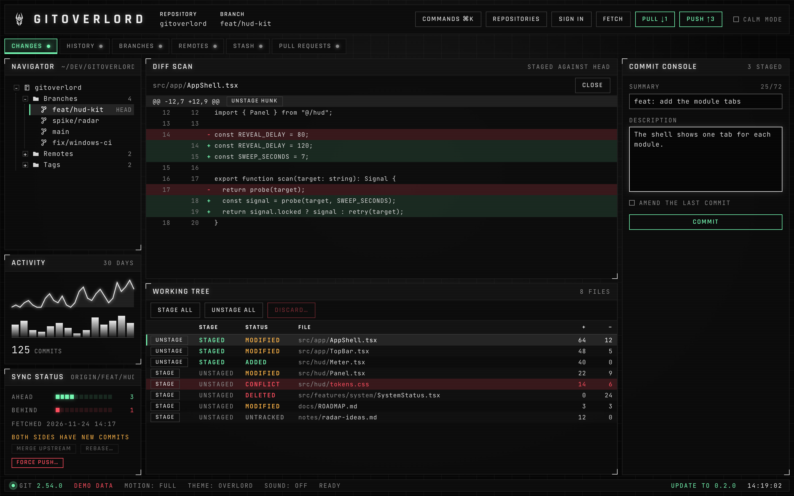
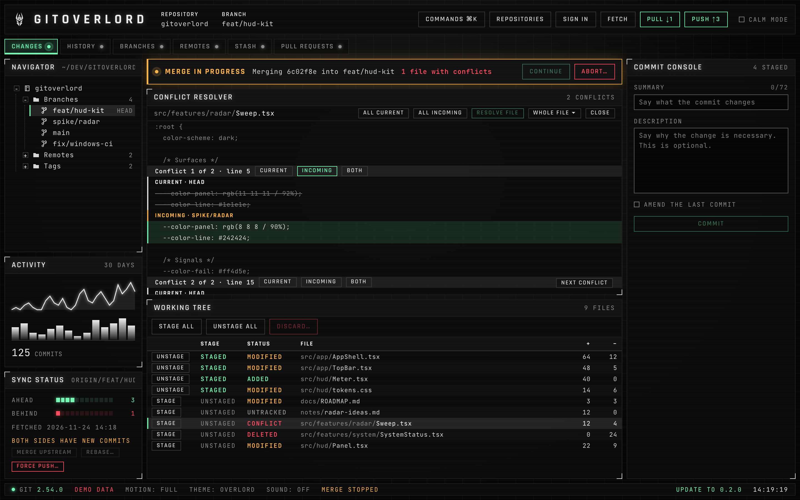
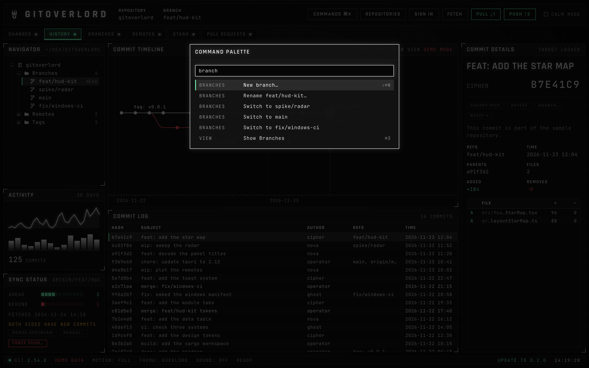
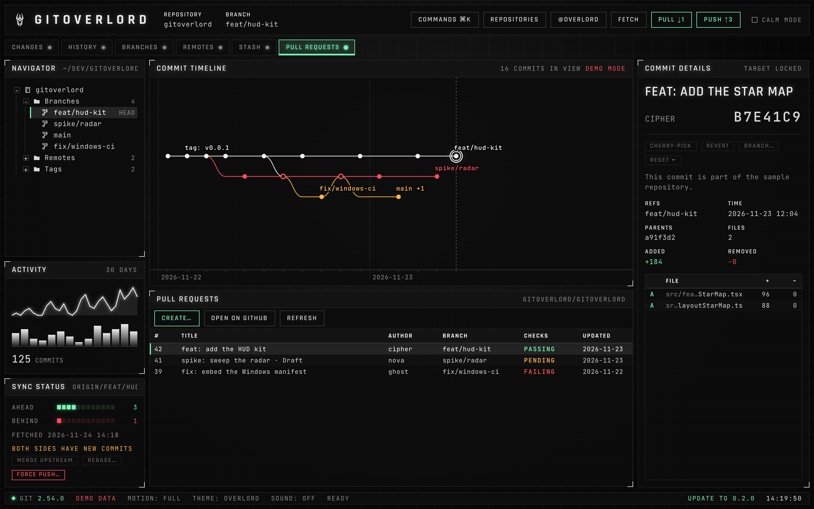

A Git client that looks like a control panel
gitoverlord is an open-source desktop Git client, and an alternative to GitHub Desktop. A Rust core does the git work. Each operation that changes your history has an Undo button.
System check
- [ OK ] Git core Rust
- [ OK ] Shell Tauri 2
- [ OK ] Interface React 19
- [ OK ] Systems macOS, Windows, Linux
- [ OK ] License MIT
- [ .. ] Release 1.0 In progress
History



Tour
Changes and diff
Stage files or hunks, then commit, amend, or discard. The diff viewer shows the added and the removed lines.

Conflict resolver
For each conflict, select the current lines, the incoming lines, or both. gitoverlord then writes the file and stages it.

Command palette
Press ⌘K, or Ctrl+K on Windows and Linux, to find a command. Many commands also have a shortcut.

Pull requests
Sign in to GitHub, clone your repositories, and create pull requests. The tab shows the state of the checks.

Features
-
Commit timeline
Shows the commits of each branch. Select a commit to see its details, its files, and their diffs.
Shortcut: ⌘2
-
Changes
Stage files or hunks, then commit, amend, or discard.
Shortcuts: ⌘1 ⌘↩
-
Branches
Create, switch, rename, and delete branches.
Shortcuts: ⌘3 ⇧⌘N
-
Stash
Stash your changes, then apply, pop, or drop an entry.
Shortcuts: ⌘5 ⇧⌘S
-
Sync
Fetch, pull, push, and publish a branch, and see the progress of each operation. The application also fetches in the background.
Shortcuts: ⇧⌘T ⇧⌘P ⌘P
-
History operations
Merge, rebase, cherry-pick, revert, and reset. The notification of each operation has an Undo button.
-
Conflict resolver
For each conflict, select the current lines, the incoming lines, or both.
-
GitHub
Sign in, clone your repositories, and create pull requests, with the state of their checks.
Shortcut: ⌘6
-
Command palette
Find each command by a part of its name.
Shortcut: ⌘K
-
Themes, sound, calm mode
Select one of three themes, turn on a sound for each result, or stop all animations.
-
Updates
The application updates itself from the GitHub releases. It installs only an update with a correct signature.
Safeguards
- Confirm
- The application asks before it discards changes, deletes a branch, drops a stash entry, rebases, resets, or force-pushes.
- Undo
- After a merge, a rebase, a cherry-pick, a revert, or a reset, the notification shows an Undo button. A discard keeps a copy of your changes in the stash.
- Credentials
- The application does not ask for passwords. Git uses the credential helper or the SSH agent of your system. The GitHub token stays in the keychain.
- Accessibility
- You can use each function with the keyboard and with a screen reader. Tests check each screen with the WCAG 2.1 AA rules, and each theme for a text contrast of 4.5:1.
Theme
The application has three themes. Each one changes only the color tokens.
Get started
gitoverlord is in development. The signed installers for macOS, Windows, and Linux come with the 1.0 release. Until that release, the install script finds no release. Build the application from the source.
To see the interface now, try the demo. It runs in your browser and shows a sample repository. It does not read the files on your computer.
Install a release
On macOS and Linux, the install script downloads the newest
release. The script needs curl and
minisign. It
installs the download only when the signature matches the public
key of the updater.
On Windows, use the -setup.exe file on the
releases page.
Build from the source
You must have these tools:
- Rust. rustup installs the version that the repository gives.
- Node.js 26 and pnpm 10
- Git 2.26 or later
- The Tauri system dependencies for your operating system
Documents
Terminal
Install on macOS or Linux
curl -fsSL
https://raw.githubusercontent.com/nikodem-wrona/gitoverlord/master/install.sh
| sh
Build from the source
git clone
https://github.com/nikodem-wrona/gitoverlord.git
cd gitoverlord
pnpm install
pnpm tauri dev
You do not need a build to see the interface. The demo runs in your browser, without the Rust core. A demo backend shows a sample repository.